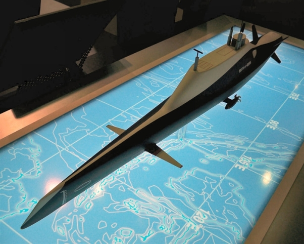

我在2015年第三季，曾提起共军的新半潜船。它原本是民用的特殊船只，用来运载超大型货物，例如船舰、潜艇、深海油井等等。进入海军，它仍然只执行运输任务。至于做为作战舰艇，半潜式船只在现代还没有服役的前例，所以这次消息传来，共军将推出常潜式海洋攻搜作战平臺，不但在技术上算是完全创新，在概念上也是全新的突破。

这是法国DCNS公司在2010年发表的SMX-25概念设计，全长109米，上浮时排水量2850吨，水下4560吨。在共军的常潜攻搜舰曝光之前，它是现代唯一的“半潜”作战舰艇设计。
上图里的SMX-25其实具有完全下潜的能力，所以称为“半潜舰”有些名不符实。它实质上是一艘异样的常规潜艇，只不过针对水面航行重新优化，所以水面航速高达38节，这是以牺牲水下航速（只有10节）和潜深而达成的折衷选择，使得它在战术运用上，基本等同二战之前的潜艇（有些人戏称它们为能偶尔下潜的鱼雷艇）。不过它也装载了对空雷达和防空飞弹，因此对反潜机免疫，只有在遭遇反潜护卫舰的时候，才会有真的麻烦。
共军的常潜式海洋攻搜作战平臺，和SMX-25是不一样的。它并没有完全下潜的能力，因此节省了耐压壳、电池、鱼雷舱和压水舱等等潜艇专有的昂贵配备，使建造费用大幅降低。在低速的时候，水綫高于大部船身，只有两个舰岛露出水面，就像准备伏击的鳄鱼只露出眼睛和鼻孔。在高速的时候，骑浪型船底（Planing Hull，美国的自由级滨海战斗舰也采用了这个原本用在高速快艇上的设计）将整艘船抬出海面，特殊设计的储水舱因惯性和重力作用，自动排出压舱水；这比潜艇使用压缩空气，要简单便宜可靠。

这是常潜式海洋攻搜作战平臺的设计总师董文才的遗照，他已于去年因肺腺癌而壮志未酬身先死。照片中他所画的简图就是常潜攻搜舰的侧面和截面图。请注意它的截面为扁五角形，两侧应该是储水舱（否则以这个设计预备浮力之小，稍有擦撞就有沉没之虞）。
因为没有潜艇的耐压壳，常潜攻搜舰有大量的空间来装置垂直发射系统，因此对空对地对海的火力都很强大；骑浪型设计则给予它极高的速度。目前有传言说它排水量两万吨，极速在60节以上，但是这实在有些骇人听闻，我认为5000吨（不含压舱水的空重，和052D大小类似；但是因为它特殊的半潜设计，满载排水量可能高达空重的两倍，即10000吨）和40节以上是比较保守合理的估计。高速加上火力，是二战之前巡洋舰（现代美军的巡洋舰，已经改变成空战指挥舰的代名词）的定义和特徵。当时的主力舰（即战列舰Battleship和战列巡洋舰Battle cruiser）以舰队决战为专业，前出侦察、打击小型目标以及威慑殖民地则是巡洋舰的活儿。我预期这型常潜攻搜舰在战术运用上，将成为现代版的旧式巡洋舰。共军把它称为“攻搜舰”，也就是“攻击”加“搜索”，基本上已经明示了它的用途。

这是大陆网友所做的CG想象图，并不准确，太过于类似潜艇。真实的常潜攻搜舰宽度很大，像是一艘放大了的高速快艇。在低速时，海水会漫过中段，只有前后两个舰岛露出水面。当然舰岛必须远大于图中所示，否则无法承受恶劣海况。因为它没有舰队区域防空的任务，只有点防空的需要，我预期它的电子设备比055和052D都简单得多，是与054系列同级的。我也预期这型攻搜舰主要会以低速运行，以保持隐身状态并且节省燃油。只有在武器已发射，所以行踪暴露之后，才会以高速脱离战场。
那么它的半潜式设计有什么好处呢？这主要是因为现代的预警机，可以在400-600公里之外发现5000吨级的中型舰艇，因此独立进行侦察和作战的水面舰艇很容易被航母战斗群或岸基敌军发现并击毁，这是现代舰队不再有旧式巡洋舰的原因，也是我一再强调国军自建驱逐舰是自找死路的理论基础。要在现代战场的复杂电磁环境里独立执行任务，只有高速是不够的，必须有很强的隐身能力，亦即减低雷达截面积至少两个数量级；因为探测距离与截面的四次方根成正比，预警机的探测距离将被压缩到150-200公里。美军遵循这个思路的发展结果是DDG-1000 Zumwalt级隐身舰，但是因为设计期间太过低估共军的技术潜力，专注于炮击岸上目标，完全牺牲了对舰、反潜、防空和反导性能，以至未服役就已过时。
常潜攻搜舰的妙处，就在于它的隐身性能更胜Zumwalt，却不必在外形上做太大的妥协，在武器容量、价钱和航速上，都有极大的优势。再加上它的高速和（高速时）极浅的吃水使它对鱼雷完全免疫，对反舰飞弹也因极小的雷达截面，而大幅加强了本身电子反制系统的作用，赋予它很强的战场存活能力，因此完全可以独立遂行侦察、打击、防空、反潜和掩护己方潜艇等等任务（不过可能依照对不同任务的侧重，会有不同的配置和型号，这应该也是为什么它叫做一个”平臺“的原因）。据称共军的第一批次订单为三艘，但也有传説竞标仍在进行中。考虑到它的革命性新设计，我想共军如果采用这个设计，就必须像航母系列一样，花一段时间在各种实验上，以学习最佳的战术运用，并且研究设计本身的进一步优化。
【后注一】最新的谣言是“常潜式海洋攻搜作战平臺”可能还不够彆扭绕口，实际名称比它更难猜，新的可能例如“浅潜式海洋高速作战平臺”等等。不过名字只是名字，我的分析是基于它半潜隐身和高速脱离的特性，只要这两点不变，结论仍然有效。如果谣言所传的这个设计的确是董文才的遗作，根据董文才的论文《潜伏式高速船型变航态自航数值模拟》，这些特性应该没有疑虑，所以只有名字和是否已开建是不确定的。
【后注二】Popular Science新刊了一篇谣言总结，包含了一些新图片，参见http://www.popsci.com/futuristic-chinese-warship-concept-is-making-waves
54 条留言
这种舰船上部结构不过水面积有限。可以想象，没有高度集成的一体化桅杆就基本不具备具备可行性。
Good point。很巧的是，中共海军刚刚在055级上突破了一体化桅杆的技术。
试着抢个沙发先。感谢先生今天的科普与分析，不过关于此舰有两点疑问请求先生赐教：
1、此舰从吨位上看可能只有4000吨的话，是否具有执行远洋打击的能力以补足中共海基战略弹道打击力量的不足（即代替战略核潜舰）？如果只是因为航程不够技术上是否有核动力化的可能或必要？
2、是否可能在半潜状态下对露出水面的小部分舰体采用等离子隐身？战机等离子隐身技术无法运用是出于携带燃料远远不及海基路基平台，大型水面舰艇露出水面的体积又过于巨大，如果用离子全覆盖能量消耗过大，而仅仅对该舰艇的露出水面部分采取离子覆盖处理的话应该不需要覆盖过大体积，耗能可以有所控制。
1.核动力过于昂贵麻烦，除潜艇和航母外不值得。攻搜舰的隐身能力仍然远弱于真正的潜艇，做为战略武器并不合适。
2.等离子隐身完全是纸上幻想出来的科技，在任何条件下都没有实用化的可能。
关于中国的航空发动机-ws-15,能否请先生做个点评？
超大有很多人，一口“毛发党”一口“国发党”，好像是在选择粽子的口味似的。
其实这都是在混肴视听。J-20用的发动机，众目所睹，没有任何的疑虑。央视引用黎明的广告词，语焉不详，不知原本何时何地为何所说，也不知这些东北人的广告词是否有所夸大不实。要依此而推翻可以明确认定的事实，完全是本末倒置。
“因此对空对面（地？）的火力”
同他一批被追授一等功的还有方平，41岁！加上今年初逝世的黄大年，国家正是因为有这些“拼命三郎”式的科研工作者才蒸蒸日上。
“面”指surface，即地ground+海sea。不过“对面”的确是容易引起误读，我已经改了。
我很惭愧，年纪与他们相当，却没有什么具体的成就传世。上次揭穿对撞机的骗局，尘埃还没有完全落定，而且负面的防止浪费，和正面的创造遗產，总是不一样的。
singsing132017-05-29 00:00:00
从其他消息来源透露，此艘军舰会装载DF21反舰弹道导弹，如果能够部署多艘船在第一、二岛链之间，似乎中国海军能够进一步把美国航母战斗群，推出第二岛链之外，先生认为可信性及实际作用可行吧？谢谢！
DF21大于中共海军现有所有垂发系统的尺寸，因此不是说上就能上的。
如果攻搜舰依我的推测是现代版的巡洋舰，那么它不会负责区域拒止的任务，也就不会携带区域拒止的武器。
crztrader2017-05-29 00:00:00
常潜攻搜舰发现反潜机的时间与机会应该优于被反潜机发现，这样是不是反而成为猎杀反潜机的有利武器?
反潜机的搜索雷达范围在几十公里左右，攻搜舰对空至少有200公里的搜索距离，所以我说它可以掩护己方潜艇。
目前的潜艇对反潜机基本没有还手之力，所以反潜机都很脆弱。如果反潜机被轻易猎杀久了，下一代必然会有远程雷达等等改进。
//常潜式海洋攻搜作战平臺//
若名字为真，核心在"攻搜"两字，中国终于可以在军事态势上，名正言顺地转守为攻了。
数年前辽寧号下水，还扭扭捏捏说是甚么实验训练平台，现在终于可以露出爪牙了。
按王兄所说的用途，从吉布提，到瓜达尔港，到科伦坡，到达卡，到皇京港等印度洋、马六甲一带，陆上国家都是些宵小级别的，用这种"攻搜"舰来作常规巡洋和震摄，确是省事省银子（航母战斗群他们承受不起）。
名字应该是真的。除了共军之外，实在没有别人能想出如此彆扭绕口的名字。
//常潜攻搜舰发现反潜机的时间与机会应该优于被反潜机发现，这样是不是反而成为猎杀反潜机的有利武器?//
武器我是外行，但即使性能上有此优势，我推测＂猎杀反潜机＂亦不会是其主要／主动的用途－－两者的价格和载员相差太远，一次失手就亏大了。
不会失手。反潜机一般只有轻型反潜鱼雷；即使装了反舰飞弹，没有远程雷达，对中大型水面舰艇还是没辙。
mr edwin2017-05-29 00:00:00
对这种舰有两个小问题，一是我个人觉得单舰的生存性再强，也不会超过舰队，那么对于一型脱离舰队单独执行任务的舰艇来说，其生存性上必然会经受考验。这型舰确实可以有效降低可探测性，但是依然会有很大几率被反潜机和预警机所发现，那么他要面临的可能就不是反潜机的挖地三尺，而是战斗机轰炸机的狂轰滥炸了，没有空中掩护的情况下，航速三十节还是四十节没有本质上的区别。潜艇面临反潜单位围剿还有生存性，他可就完全死路一条。第二，他可能是一级很偏科的舰艇，我比较怀疑他能否执行防空和反潜任务。054a的雷达分布过于零散，这级舰则需要高度整合化的桅杆，整体设计上势必弄出一个非常巨大的脑袋。这个脑袋无论如何进行处理都会被轻易的侦测到，所以我认为为了其隐蔽性可能不会设计非常复杂的电子系统，有可能只会满足比较低限度的对面对空探测。点防空的意义也不大，因为反潜机可以用小牛之类的武器在点防空射程之外攻击，如果遇上战斗机就只能坐以待毙。所以我认为为了隐蔽性，这型舰恐怕不会有任何有效的防空能力。至于反潜，首先它的直升机甲板设计恐怕不容易，在隐蔽状态下长期置于水下的机库也不能起飞任何直升机。对于性能优秀的潜艇来说，他隐蔽时的主动搜潜，攻潜能力比一般的反潜护卫舰威慑力更小，而在正常状态下又和普通护卫舰无异，多用途能力还不如普通护卫舰。那么在不与舰队配合的情况下他的反潜效率可能很低，为了隐蔽性考虑干脆可以考虑直接省去了。那么仅剩的作用可能只是反舰，和对岸打击，这个还是比较有用的，因为对面打击武器普遍有很长的射程，在敌人展开追击之前有足够时间逃离，不过必须要依靠整个体系作为支撑，作为共军核潜艇对面打击能力的补充。
054的点防空系统，射程70公里，远超过P8的攻击范围。
该用大舰队的用大舰队，该用巡航导弹潜艇的用潜艇，用不上的才用这个。航母战斗群是一个体系，攻搜舰不在那里面。区域拒止也是一个体系，攻搜舰也不在那里面。它就是个打零工的。地球上数一数二的海军没有零工活？那么打游击也行啊。难不成共军已经忘了怎么打游击战了？
一艘隐身舰，偷偷摸摸地到了你没有防御的交通路綫上，放下被动拖曳声纳，听到你路过的潜艇就冷不馊地打一发反潜鱼雷，你不怕？你的核潜艇比它贵几十倍，可是打也打不过，跑也跑不掉，你不烦？
crztrader2017-05-29 00:00:00
常潜攻搜舰下潜深度可调吗?如果可调至水面下隐身，加个AIP，攻击时接近敌舰难被发现，那就厉害了。但下潜深度可调其结构将复杂很多，或许不如在浮出水面部分做得更隐形来的好。总之，这武器让人有很大的想像空间。
要真的下潜，就必须有耐压壳等等的累赘。
这是一款廉价、隐身、高效、高速的装备，适合用在次要方向。损失了，也不会太心痛。
frances2017-05-30 00:00:00
I don't know technology well esp not in this area, but i must say i saw a great idea/strategy from replies above...same thought i had last week when i read about how much bigger defense budget US govt committed in comparison to China, Russia etc....
Yes Chinese can produce the similar or the same stuff with a much lower cost (my guesstimate is one fifth), therefore how you make US waste their budget to achieve little because of their Democracy/beurocracy (?)/inefficiency/corruption...maybe even by bluffing? For a laugh!
The purchase prices may be 5:1, but the development costs will be more like 10:1.
cidy long2017-05-30 00:00:00
至于王兄担心的损管方面，我觉得倒是不用太担心。如果是我来设计，由于该舰有两个独立舰岛，我会把它设计成分布式动力和转向系统，也就是说，前后舰岛分布控制动力系统和独立水箱，一旦出现中间部份损毁，可以分开前后两截独自操作。整体生存能力肯定高于同级的其他舰艇。
从工程和系统来说，做到这点并不难，只是多铺设一套控制电缆和多一个控制台和增加一个中央控制台而已，应急首尾分离也应该是成熟技术，不是什么难点。
分布动力／转向系统并不是什么新东西，共军在海警船上早就已经有了，这个系统有点类似汽车的四轮独立驱动和转向，前些年在南海中国海警船跟越南海警船对峙的时候，越方发现中国海警船箭嘴一样的船头居然可以一直正对着他们，吓得他们赶紧撤退。
如果这艘舰受到战损，最可能出在舰岛。这里若是中了飞弹，会有高级军官伤亡，战力也基本消失，但是它倒不是我担心的地方，因为船体结构没有受损，水兵们大多可以活命，大不了投降就是了。
我担心的是船体中部如果因为触礁或水雷而受损，有几个舱房进水，那么全舰有可能很快完全沉没，几乎不会有人活命。
我想在论证的过程中，必然有中共海军人员指出这一点，只是我不知道设计师是如何弥补的。
cidy long2017-05-30 00:00:00
共军的海军是新进发展军种，他们肯定对各国现有海军装备的利弊分析研究个透彻，再决定自己应该发展什么装备。
个人觉得，共军一贯的尿性就是讲究高费效比，不光是战争也好，相持对峙也好，还是和平威慑也好，自己耗费一块钱，如果可以做到让对方必须耗费数十甚至数百元的开销来平衡，那么消耗对方的战略目的就达到了。
从这个方面来说，我完全认同王兄的评论：“LCS的速度，Zumwalt的隐身，护卫舰的价钱，驱逐舰的火力，应该是没有太多可抱怨的了。”
中米之间的战略对歭，我估计还有数十年时间，如果共军可以一些高费效比的方式来消耗米军，这本身就是战略高手或者是老狐狸的计谋，我相信老共决定发展这款装备一定有他的原因。
个人推断，这款装备，从名字（侦搜舰）上来判断，主要目的是战略前出和掩护攻击核潜艇，也就是多数时候出现在战略边缘地带，进行海军的战略穿插，隐蔽攻入，快速撤回。
美国已经失去对大型发展计划的控制能力，任何全新设备的开发，只怕会比中国贵10倍。
singsing112017-05-30 00:00:00
也回应一下mr Edwin. 美国DDG1000号称全球最先进的隐身战舰, 现在这艘半潜明显地比它的隐身能力更强, 而防空能力却在同一个水平或更好, 那么有甚么可怕.
相对上反潜机更怕会遇到这种战舰, 因为反潜鱼雷及一般反舰导弹对它的作用打了很大折扣.
LCS的速度，Zumwalt的隐身，护卫舰的价钱，驱逐舰的火力，应该是没有太多可抱怨的了。
若是非要吹毛求疵，那就是它的预备浮力很小，损管是个大问题。不知设计师是否在这方面也有巧妙的解决方案。
如果说最近出现的像是空军以J20为代表的新锐战机，陆军一系列的新式信息化装备，海军的庞大建设，火箭军的反舰弹道导弹等等武器标志着中国在进入新世纪以来，不断推进的军事科技的研发开出了硕果。那么17年后的今天，共军在前沿科技的发展趋势又到底是什么呢，10年后又会有什么新事物会出现？不知道王先生对于昨天观察者网上关于高超音速飞行器的文章有什么见解？可惜我对于高超音速这个话题的知识储备很浅薄。
原本想要写的，后来觉得资讯还是不够，再等半年吧，TRRE年底要试射了。
晨枫基本上是先评论了XS-1火箭，然后节录翻译了Aviation Week的文章。大体上还好，我就只挑两个毛病吧。首先超燃发动机的难处，不是他说的激波。其次，中方的这些超燃飞行器，虽然和美国是同级的，而且可能已略有超前，但是从大局来看，仍然只是早期的技术验证机，Aviation Week有点危言耸听，晨枫又加了点油添了点醋，让读者以为很快就会有实用成品。我的理解不是那样的。
不过厦门那个会议透露的消息，确实比起我以前的认知，裤衩更红些。基本上所有尖端的技术，从各类超燃发动机，到爆轰发动机，中国都有团队在研究，而且已经有了初步的结果。
我以前说超燃轰炸机不实用，我现在还是这么觉得，但是用来发射卫星，或作为侦察无人机，却是有可能的。详情如何，我觉得Aviation Week的两篇文章还是不够的，所以再等等吧。
mr edwin2017-05-30 00:00:00
我的担心就是，这级舰可能因为过于强调隐蔽性，两面不讨好，在常规战术的执行上不如普通护卫舰，在隐蔽性上又不如核潜艇，那他的地位就会很尴尬。毕竟美军的侦搜能力，对面打击能力全球第一，这级舰很可能出现打不到又跑不掉的情况。埋伏核潜艇的基础是有发达的海底水声监听系统以及海空反潜网络，中国在这方面显然比美国差了一个数量级，靠一艘舰远海偷袭一艘核潜艇的难度可能不亚于台军用海狮海豹什么的偷袭辽宁舰。更何况如果能够大致掌握美国海军核潜艇的活动范围和常用水道，也就不需要这个东西了。共军需要游击舰，但显然这级舰只能成为共军的拐杖，在核潜艇性能尤其是数量足以部分对抗美军的时候，就可以考虑丢掉这跟拐杖了。这个真的不是一个很靠谱的东西。
它比潜艇便宜得多，而且有些任务（例如威慑）必须用水面舰艇，所以总是用得上的。
我理解的就是远洋打杂舰，056是近海打杂舰，这个是远洋打杂舰，所以网上传言叫全能舰就有原因了。另请教王先生，此舰型可否建成补给舰，增强生存能力？
我想它叫做平臺，应该是准备做出几种不同的雷达和武器配置，在对空、对海、对岸和反潜可以有不同的侧重，但这个船型不适合做补给舰，因为它没有办法在甲板上留下相关的设备。
董文才专门研究设计项目是半潜船。包括其分支之一「新光华号」，它是目前国内最大，在它的领域号称世界第二的半潜船。它身长255米，宽68米，可载重98000吨，其甲板面积达13500平方米，属于军民两用半潜船。
那个经验在研发新平臺的过程中，必然有过帮助。
中国根本没有王先生说的什么常潜式海洋攻搜作战平臺。只是谣言，谣言的根原是pop3说，中国目前在发展9XX型专用搜攻潜舰。外国人无法理解什么是专用搜攻潜舰，所以才產生常潜式海洋攻搜作战平臺。
消息来源不是POP3，是超大和其他地方有关董文才的文章。
mr edwin2017-05-30 00:00:00
一体化桅杆和舰桥部分需要长期露出水面才能获得有效的预警能力和持续航行能力。这两个东西加在一起，体积恐怕绝不会小，无论如何修型恐怕都不会有非常好的隐身能力。对于现役反潜机和预警机来说侦测到他的难度不会很高。我认为最稳妥的方式还是不要保留复杂的电子系统为好。让低矮舰桥浮出水面满足日常航行和基本侦测需求即可。
我预期是054B级的一体化桅杆。
cidy long2017-05-30 00:00:00
R&D cost. 中米之间的确是1:10 or higher，我在2001-2005这段时间在米资IT公司研发部门工作，被派往深圳，当时老板（President）告诉我，研发达到完全相同的结果，在深圳花一个米元，在香港需要3个米元，在米国需要9米元。
这是他们实际操作的结果。这还是民用项目，和在深圳的高度发达地区实施项目，如果是军用，和在内地开发，远高于这个数字。具体多少，行家里手才知道。
而且美国的研发计划很容易落后进度，甚至完全失败。
"我很惭愧，年纪与他们相当，却没有什么具体的成就传世。上次揭穿对撞机的骗局，尘埃还没有完全落定，而且负面的防止浪费，和正面的创造遗產，总是不一样的。" I don't see why with your intellect, you have to "settle" with just writing these blogs, however informative they might be.
When my son goes to college in two years, I may find a new gig, probably teaching, but I still won't be able to lead and build a historical project again.
I built the world's first fully automatic program trading platform 17 years ago, but that had no net contribution to mankind. In fact, it might have had a pretty negative contribution.
My son's girl friend's grandfather invented the floppy disc back at IBM. That was the kind of accomplishment every geek would aspire to achieve in his lifetime.
frances2017-05-31 00:00:00
Teaching is good , writing books is also good, but i feel maybe to set up a Think tank organisation for PRC is even better...
To lead and build a historical project again...Does that really matter to you, still?
You have been making significant difference already...the influence of this blog can't be underestimated...
It is not a big deal. Just a little sad to realize another youthful dream never to be fulfilled.
BTW, I want to urge all fans of 《Game of Throne》 to check out this theory: https://www.reddit.com/r/asoiaf/comments/6dx676/
which I consider very clever and likely true. I already forwarded the link to 《观察者》, but there is no guarantee that they will bother translating it.
“下一代”是指下一个部署的还是下一个研发的？095的整体设计轮廓是2012年就确定的，那时的全电技术还不够列入计划。这事必须等等才能下结论。
mr edwin2017-05-31 00:00:00
如果他的用途以远海游击和打杂为主，其触礁和被水雷炸伤的可能性就不会太大。毕竟没有人会去一个开阔水域布雷，其本身的灵活性也确保了不会像潜艇一样被轻易埋伏。在通过危险水域的时候也可以选择上浮通过，再通过远高于潜艇的航速高速脱离。这是潜艇没有的能力。
损管这事不能因机率低而忽略。
前几天大陆排名世界第一的围棋选手被Google研发的AI击败了。和一位军事爱好者的朋友聊到此事，不禁联想到今后战争的指挥交给AI是否会更好呢？象棋和国际象棋等棋类游戏本身就是战争的一种简便化游戏，各种棋子的规定的移动范围和吃掉对方棋子的充要条件又与现代战争中各种战机车辆舰船的移动范围攻击范围和携带弹药数是种种可以对应的关系。而在棋类游戏中AI最大的优点是不会犯低级错误（当然AI有混乱的时候，或者本身设计有问题），比如它们可以极为清晰地注意着舰队是否在某种敌方武器的攻击范围中，又或者根据敌方空中力量的航程计算出并保持一个对己方有利的距离以迎击敌人而人类指挥官可能因为一时混淆一些载具或武器的速度航程等参数犯下低级错误。您觉得今后会有这种趋势吗？
战争的复杂程度，比围棋还高了好几个数量级，AI在短期内不能取代人类，但是可以作为战术的辅助。
SU-35一个很有用的创新，就是有AI系统建议空战狗斗的策略，可以避免驾驶员因紧张而手足无措。提醒指挥官不要犯低级错误，应该是AI上舰的第一步，不会太久。
cidy long2017-06-01 00:00:00
回@海熊猫。围棋也好，象棋也好，各种的game都是基于一定的规则和逻辑，而战争，则完全不同，真正的战争，只有非常弱的规则，战斗则完全没有规则，以取胜为目标，一个小兵，一枪就能干掉一个一级上将，这是什么规则？
战争的规则根本就不可能在棋类游戏里面出现，也完全不能用计算机来演绎。计算机只能从事逻辑分析和运算，没有逻辑，计算机什么都做不成。
最近几年最能忽悠人的，就是所谓的大数据和人工智能，吹得神乎其神，计算机术语叫住“data mining”，也就是从已有的数据中挖掘一些有用的信息，而且这些信息也只是过去发生的事情，不代表今天或者是以后就一定会发生，也绝对不是马云吹嘘的那种万能。
在这里讨论这些东西，有些离题了，但是作为这方面的专业人士，我无必须出声。我自己在计算机硬／软件行业工作了超过20年，20世纪初出现的所谓逻辑编程语言prolog当时的确红火了一阵子，所谓第五代计算机也是一样，概念上红火了一阵子，就无影无踪，最终还是回到逻辑和运算上来。到现在为止，所有的超级计算机，仍然是高速运算和天量高速内存为特点，其中基于逻辑运算的只是非常低的一个比例。
我同意，运用大数据做分析必须很小心，因为它纯粹只是给出特定统计方法之下的领先项（Leading Term），随着统计分析方法不同，结果也随之变化。英文里面有一句老话：Lies， Damned Lies， And Statistics，就是描述这个现象。
大数据加超算，有了更精准的数据做支撑，那是否会让“计划经济”重新焕发活力，一定程度上破解产能过剩的资本主义危机？
经济比战争还要复杂，很难预测整体走向，目前计算机还是只对快速反应比较有用。预测只用在特定问题上，例如零售和飞机票预定。
对不住啊楼上两位朋友，我不小心把楼带歪了。谢谢cidy long先生的解惑，遇到业内人士了。也谢谢贴吧元老的世界对白兄的关注。不过藉此机会乾脆想问到底一下（太抱歉了，可能再歪几楼），前阵子各个论坛都讨论流传说中国获得领先突破的量子计算机同样是一种概念炒作吗？能否简单介绍一下吗？（明明是计算机，貌似又同时和王先生的专业重迭了）
量子计算机还在很早期的发展阶段，或许再过20年能有小成。但是即使成功了，它的用途仍然是很有限的数学上少数几个特别难的计算问题，一般社会用不上。
cidy long2017-06-01 00:00:00
答@世界对白，这个问题有些离题，看完以后请王兄删除。
制造业主要是两个制造模式，英文叫着“make to stock” & “make to order”,用中文来解释就是，第一种，予生產，是在没有订单确认情况下的先生產，然后寻求销售，第二种是，按照订单生產。
在中国，產能过剩的主要原因，是以钢铁为代表的建材业以第一种生產方式进行制造，加之制造业同业对销售市场的估计过于乐观，而且跟政府倡导的所谓“做大蛋糕”的逻辑（跟王兄的上一篇文章中讲到的那个《真理只在大炮射程之内》类似，实际上是一个用于宣传的广告词）引导也有密切关系。而按照第二种方法生產的，很少出现產能过剩的情况。
西方国家的主要制造模式，是第二种，也就是按订单生產，这种模式是比较成熟的商业模式，是一种“生產”／“销售网络”／“零售”三级分离模式。第一种，予生產也有，主要发生在集团内自產自销的情况。
大数据的使用，对以上两种制造业情况都有帮助，但是大数据主要用在商业领域，特别对零售和供应链控制库存管理非常有帮助。
超算其实跟商业领域的大数据并没有太多关系，超算主要用于模拟各种复杂的已知模型的研发运算（比如核爆，复杂机器设计，分子级别的生物分析，制药等）和超大数据量的图形处理（巨型雷达／卫星数据，地质，气象等天量数据处理能力）。
我又离题一下回Cidy long，自己工作和供应链有关，想说一下几个要点
1) build to order 和 build to stock 其实没有成熟不成熟的关系，而是对货物种类，生產时间，运输，资本等等有关，iPhone和Samsung 每次閞售前都预货近百万，可见没有必然关系
2)產能过剩的重点是產能，不是產品。產能是指工人，机器因放置不生產的成本。即使Build to Order，產能过剩也可以出现，build to stock也可以无问题
3) 大数据的强大不在不在对零售和供应链控制库存管理，量太小了，这些小事情做了好几十甚至一百年了，大数据的强大在于看到本来不能预见的事情
大数据除了受统计方法的细节影响之外，还有一个根本假设，就是未来和过去一样，因此它对没有前例的事件完全无效。
总体而言，用来当参考可以，用来做全能黑箱不是个好主意。
gphuang672017-06-01 00:00:00
以半潜提高隐蔽性的设计很类似美国南北战争时期北军的 uss monitor舰，这艘舰被寄望能盯住南方的重要口岸，所以取名为 monitor，有兴趣的网友可以参考
https://en.m.wikipedia.org/wiki/USS_Monitorbtw, call me lack of imagination, i really don't see a lord of light out of jamme lannister :p
Monitor的设计是为了减小承受炮击的面积，半潜船则主要是为了减小雷达截面，不过同样都是往水面下躲的思路。
Monitor后来就在暴风雨中因进水而沉没，这正是我担心的预备浮力不足的问题。
There really is no better candidate for Azor Ahai. Anyone else being the savior/hero would make the story totally cliche.
多谢两位仁兄的耐心解释，受益匪浅！
好了，歪楼到此为止。
Simonx2017-06-01 00:00:00
王先生，您好！
有没有可能在上面放艘野牛登陆艇协助登陆作战。
理论上有可能，实际上不会。
赛跑用的马，不会用来拖车。
不过说到登陆，好像苏联研制过全潜式登陆舰。貌似都生产了一艘，后来下马了。苏联人真会烧研究经费，关键做出来好多东西还不要。。。不过真的全潜式登陆舰和以前有个国家研制过的潜舰航母完全没意义吗？
太过昂贵、脆弱而低效。
这是谣言从国内论坛到国外转了一圈，又回到国内的结果，加油添醋已经到了原本是什么肉都尝不出来的地步。
今天在观网上也看到了席亚洲的武库舰一文, 跟南山卧虫上面所提的文章有很多雷同的地方, 其中提到武库舰的作用是提增强反舰的攻击. 以中国航母战斗群相对于美方的弱势, 我觉得发展这种战舰好像是有需要的. 但席文中也提到弥补这种弱势, 改装055 也是选项. 不知王先生是否可以就习胖此文点评一下?
我觉得这个武库舰的谣言，来自中国网友脑补，将几个歷史悠久、有关武库舰的揣测强加到最新的消息上。美国的民间军评水准很低，不但照单全收，而且又加上自己的胡猜。转了一圈回来，已经到了面目全非的地步。
网友们无中生有的本事和习惯，实在太过厉害，我刚在前一篇文章讨论过。为了过滤这些杂讯，我们只能死守已确认的真实材料，亦即董文才的论文和相关报导。
对无还手之力的地面目标做打击，是美军航母战斗群冷战结束后的主要任务。因此他们在过去20几年的建军，主要是针对火力密度和效率进行优化（例如开发DDG1000，取消不能发射巡航导弹的反潜护卫舰，退役专职空优的F14，大量采购便宜、高效但空战性能平平的F18等等），武库舰也是因此才被考虑做为对航母战斗群的便宜替代。
但是中国的大政略，完全不同，没有每年要对几个小国打几百发巡航导弹的必要。共军的战略重心，虽然正从近海推进到远洋，仍然是防御性的。防空和反潜，才是中方舰队的主要任务，而这些任务不是简化了电子系统的武库舰能胜任的。中共海军若有打击任务，也会是针对美军航母战斗群的水面舰只。这些目标本身防御力量极为强大，而空射导弹的总体打击距离（即包括载机的航程）超过舰射飞弹3-5倍，所以发展并改进航母+加油机才是正道。武库舰画蛇添足，被共军采纳的机率很小。
也看到了, 王兄也必看了, 座得回应.
席亚洲这次太过轻心了，没有达到他平常的水准。
席亚洲的文章主旨是探讨中国海军需要什么样的军舰，浅潜舰就是个话题引子，他的意思就是，反舰对地攻击手段很多，并没有否定浅潜舰，他的探讨很有意义，就是未来中国海军的发展方向，其实王先生可以就此着文，也探讨一番。
正因为他详细讨论了何种船体适合做共军的武库舰，让我觉得他完全是吠错了树（Barking Up The Wrong Tree）。共军根本就不需要武库舰。
发现一个很适合先生的软体，也向各位网友们介绍一下。
CMANO（Command: Modern Air/Naval Operations），曾经竞标美国海军的战略推演软体落选后在2013年推出民用版。2015年推出了专业版，专业版被部份军方机构用于训练，亦被部份智库和机构用作推演地区衝突（如美国外交政策杂志）。其民用版在世界最大的正版游戏软体下载平台Steam发售，因为过于专业和难以上手导致销量较低和价格较为贵。这是官网关于专业版的介绍，包含一些美军人员的使用感想。
http://www.warfaresims.com/?page_id=3822这是超大网友做的南海衝突推演
https://lt.cjdby.net/thread-2284867-1-1.html这是操作界面
tieba.baidu.com/f这款软体机乎没用3D模型，所以对显卡等电脑配置要求不高，缺点也是其优点就是细致过头，每种载具武器等都有上百个装备等选项。战场中特殊情况模拟也极其到位，有人组织手头所有的反潜机炸了一艘潜艇所在海域半天却发现炸死的是一头鲸鱼。不过还有两个缺点一个是武器参数数据的准确性和AI不够聪明（不过虐新手足够了），但参数准确性可以允许玩家调节更改，官方也在不断更新数据加入新的战舰武器战机等。专业版可能可以解决上述两个问题，但貌似不对个人买家开放。
顺便提醒各位网友，这游戏属于大数据流，如果无法养成处理大量数据和短时间处理大量战场报告（也许可以暂停？）的集中力耐心技巧和习惯，以及拥有海量的英语及其专业术语能力，不建议花钱买这款游戏（民用80刀）。另外画面也略显粗糙，几乎没有飞机战舰等模型。目前大陆加港澳台估计民间玩这个的不超过四千人。
我知道这类软体。这是真正痴迷于细节的玩家们的玩具，所需的时间精力太大，不是我这种对各样事务都有兴趣的人能投入的。
正因为它的自由度太多，使用者可以简单扭曲参数来得到任何答案。汉光演习不也就轻松地击沉了三艘共军航母吗？
之前听玩“鱼叉”的一位朋友说过，相当于鱼叉HARPOON系列的升级版。据说光指令说明书就一百多页，目前也有中国拓展包，中国航母是肯定有了。不过有个大BUG，就是电子压制被极端夸大了，据说有人用八架EA-18G就把中国的全部路基雷达给瘫痪了……只能试着由玩家微调一下电子压制的参数了。还有一个缺点就是好像无法模拟特种部队的渗透作战
在90年代，曾经有一架美军电战机瘫痪全部共军岸基雷达的先例。这也是后来共军对电子对抗极端重视的起因。
这类游戏的参数，至少有几万个。所谓的“玩”，其实就是调整参数，以求精确复制实际作战的结果。这对探讨歷史上不同决定所造成的影响很有价值，但是现实的战场不断在进化，一旦武器和战术环境有了改变，既有的参数必然不能做出正确的预测。这正是我以前提过的，大数据先天假设未来与过去相同，所以不能用来推测真实的未来。
"而空射导弹的总体打击距离（即包括载机的航程）超过舰射飞弹3-5倍，所以发展并改进航母+加油机才是正道。武库舰画蛇添足，被共军采纳的机率很小" 了解. 就是尽快让歼二十上航母才是正办.
海基型J20应该是与018号航母配套的，所以会是2024年前后服役。
Mr edwin2017-06-13 00:00:00
看来日本在钓鱼岛和其他西南岛屿对华使用武力的决心和意愿确实在不断上升，EFV和轮式装甲车都搞出来了，看起来为潜在潜在战争做了不少准备。
意愿是有的，但是日本的军工实力却远不及能满足意愿的层次。
美军「费兹杰罗号」驱逐舰在日本外海与一艘货柜轮相撞,受损严重,水线下有道大裂缝。货柜轮上船员说，「是跟驱逐舰同方向航行然后发生碰撞」。因此，驱逐舰有可能是被货柜轮从右后方撞上。当时舰值班指挥官可能想超船穿越，但船速估计错误，舰身被货柜轮球鼻首撞出大裂缝。这事件应该会给各国海军一大教训。
BBC中文版有货轮航行轨迹图，由名古屋至东京呈现大S形，在S上弯处撞到军舰，调查重点在货柜船为何髮夹弯?货船与军舰并行时，为何军舰没有遵守避撞规范?
目前的信息，远不足以下结论。猜测没有意义。
Mr edwin2017-06-20 00:00:00
美国海军的军纪问题。包括前段时间那个莫名其妙消失了5天最后被在轮机舱里找到的水兵，简直不可思议。一个人可能在避开全舰搜索的情况下在繁忙的轮机部门藏匿五天不被人发现？其基本生存来源是怎么解决的，为什么会被误认为落水失踪。这里面肯定有不可明说的猫腻，有某些人因为某种理由欺上瞒下了。还有之前一个水兵在舰艇访问期间逾期不反，因不明原因躲在他国舰艇里，直到舰队开拔后才被发现。美国海军的军纪问题真是够严重的。
美军素来不以军纪见长。
海熊猫大，有关于更动留言的功能，之前也有网友有类似的问题，很遗憾的是中时网站的功能非常的阳春，除了删除以外好像就没有其他的功能了，如果要移动的话，可能要劳烦您在想要留言的版面上面在重新PO一次了...
谢谢楼上朋友的建议，不过还是先等王先生删除了再贴过去吧。已经拷贝完毕了
删了。
说到比特币，最近我发现美国最大的游戏数字版软体贩卖平台steam，几家日本的航空公司和一些国家地区的amazon都可以用比特币付款了。paypal也开始提供比特币交易平台了，这玩意就像黄金似的可以从地里挖出来却价值连城。
只能长，不能短，所以被哄抬上去了。
mindarla2017-06-23 00:00:00
我完全把他当成线上游戏的游戏币一样，或是某种经济学货币学的实验，就是一种本来没有担保、毫无价值的东西，可否经由让很多人持有，把这"很多人"拉进共犯结构里，从而确认其货币功能，產生价值；甚至认为这跟碳交易权一样，是一种无中生有，变魔术变出来的期货。
人类自从发展出政府之后，货币就一直是政府的专利。这些綫上货币的特点就在于其独立于政治力量的管理和担保，所以它们长期的价值很有问题。
Simonx2017-07-09 00:00:00
王先生，您好！
军武方面我是个大外行，有个奇想：常潜式海洋攻搜舰有没有可能在小型化后成为以卫星制导的无人舰？
有可能，不过至少在15年之外。
我觉得这种"潜洋舰"将来恐怕有大用. 我的理由如下:
首先不能低估, 英美是当之无愧的海盗民族. 英国人曾经鼓励私掠船攻击当时强大得多的西班牙舰队, 而西班牙向英国抗议的时候, 英国却推诿说那是海盗行为, 不是国家正规行为. 等到西班牙终于忍无可忍讨伐英国的时候, 英国人反而打赢了无敌舰队.
在冷战后的今天, 美国人宣传战的做法和当年英国的海盗做法如出一辙. 情报机构通过各种白手套基金会, 秘密资助媒体和NGO团体来攻击颠覆主要对手的政府, 一旦对手向美国抗议, 美国也不会承认受其指示, 甚至反而会指责对手侵犯民主人权. 美国海军学院网站上甚至直接有讨论过, 要发动海盗劫掠中国商船队来对抗中国的"一带一路"计划. 虽然说今日此种计划已经不大可能, 但利用第三方势力冲上去当炮灰是英美习惯的策略.
假设万一美国人真的打算耍无赖, 挑动一带一路沿线国家攻击中国货物船队, 那么此舰的威力足以在次要方向上震慑潜在敌人, 毕竟进攻是最好的防御.
说来惭愧, 小弟贪生怕死的很, 我一直希望中国能够有足够多的时间, 造足够多足够好的军舰, 多到美国人知难而退, 兵不血刃的挤掉对手获得海洋霸权, 所以一直希望把双方摊牌的时间拖延到2025甚至2030年. 看到这些年纪不大, 做出巨大贡献的人早早因病离世, 令人感动, 好像忽然间觉得又不那么怕死了.
我已經解釋過，這個設計的致命傷是抗戰損能力太低，所以實際價值嚴重存疑。對付有敵對行爲的周邊小國，最有用的是兩栖攻擊艦隊：送上一兩個旅，把海盜船基地港口砸個稀爛，甚至摧毀其首都的基礎設施（尤其是極爲寳貴的各類數據中心，連備份一起燒光，會造成難以彌補的企業損失和社會混亂，卻可以是近乎零傷亡的“人道戰爭”），然後迅速撤軍，會有決定性的嚇阻效果。1962年的中印戰爭和1979年的懲越戰爭都出於類似的考慮；雖然沒有完全成功，但當代共軍的機動打擊和後勤補給能力已經有了數量級的提升，我相信2020年代中期之後的兩栖突擊作戰會是輕而易舉的。